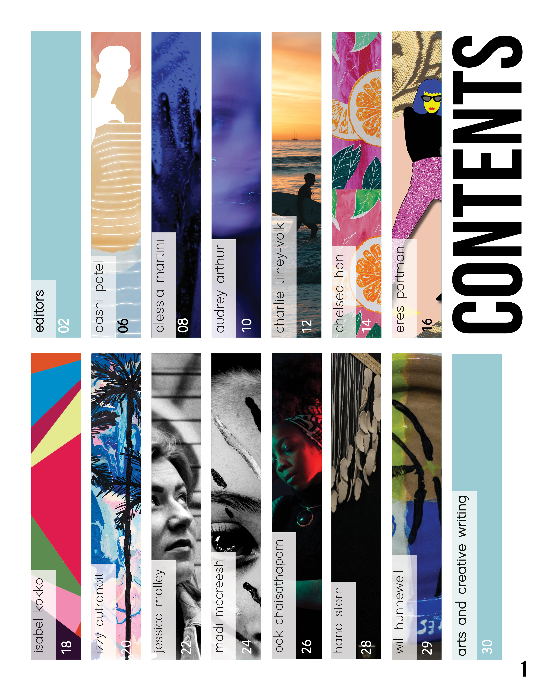
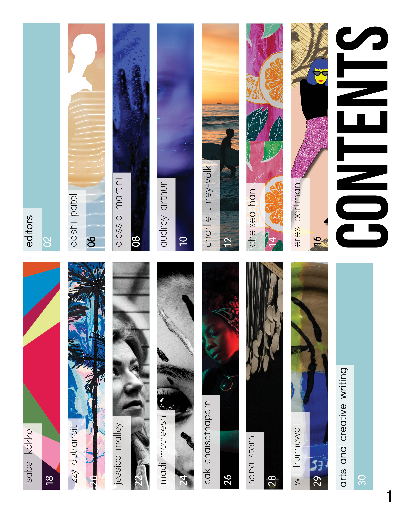
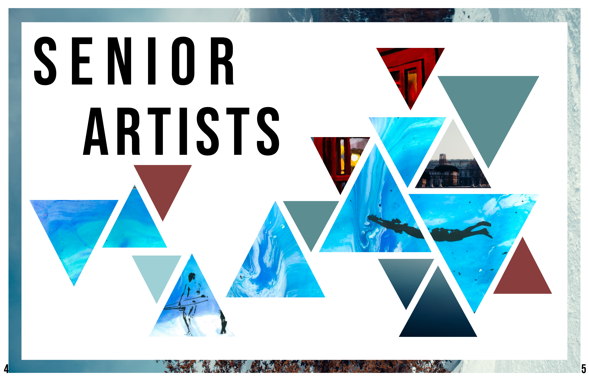
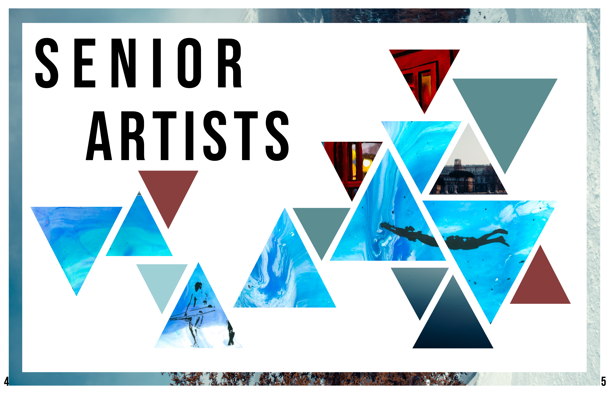
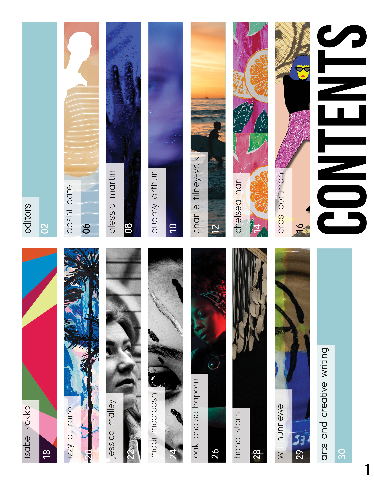
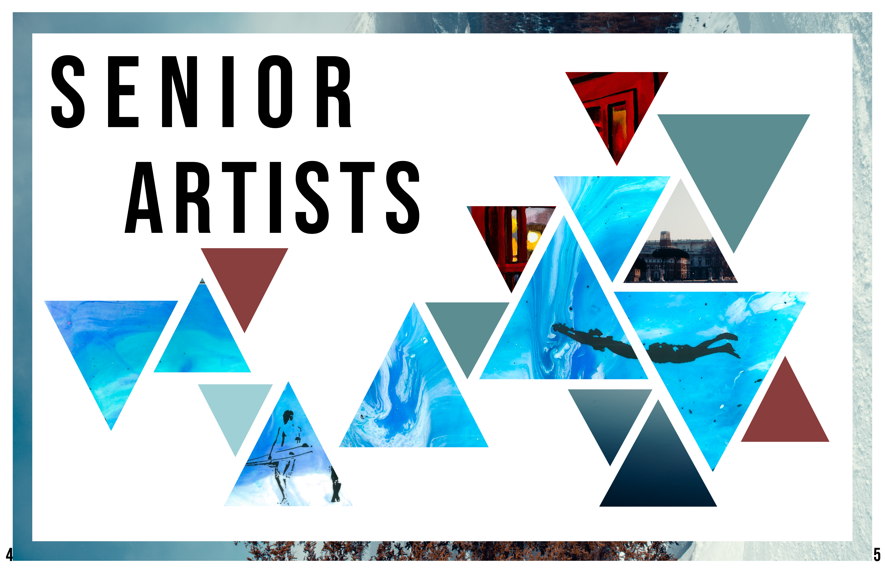

 



The theme of the 2018-2019 Art & Literary Magazine was based off of the word “contrast”. As Head Layout Editor, I created the cover and layout of the magazine reflecting its theme with only using the artworks of senior artists. I used contrasts in color and used the same color palette throughout the magazine. There is also contrast in land and sea from the cover, as well as bold and regular styles in typography.
Most importantly, we wanted to highlight the contrast in each senior artist’s work and showcase their uniqueness in how they express themselves in their preferred art medium.
Created with: Adobe InDesign

